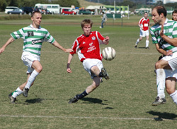
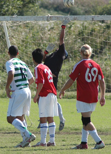
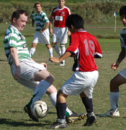
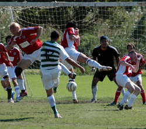

|
Misato, Sunday 21st October,
With blue skies and with the sun shining strongly a real sense of optimism could be felt amongst the Embassy players. Was this to be the fateful day when we would lose our Div. 1 virginity and post some points on the board? It certainly felt like it. With seventeen names on the teamsheet sixteen turned up at Misato station bright and early, with only Brian's identical twin brother Brian failing to appear.
With Keith still out of contention with a broken finger Mexican 'ring in' goalkeeper Jorge Shilton was recruited between the posts which left the Embassy with the luxury of the choice of sixteen outfield players. From the sideline, crocked keeper Keith used his broken digits to organize the squad with the aid of a sensational new magnetic marvel the 'Crowley Remote All Purpose Player Positioner' or CRAPPP for short.
Fashioned by Keith himself (Blue Peter style) from an old biscuit tin and some gaffer tape, Keith had sixteen magnetic pieces all ready to go and plumped for a strong opening line up. The game kicked off and the Embassy starting eleven began well, stroking the ball around and frustrating the opposition. In particular were the excellent passing combinations between both Satoshi 1, Yuya and Satoshi 2 - which were great to see. (here's something for those Japanese lads)
Indeed, there seemed to be plenty of passing and solid teamwork from the whole team which almost culminated in a goal on several occasions. The engine room of Yuya, Hal and Ferdie was controlling things in the middle with each making forging runs back and forth. A silky passing move between Silvano, Alex and Crouchie almost broke the deadlock as Embassy applied the pressure. Chiming in from the defence in a familiar move, full back Tim ghosted down the right wing, collected a pass and found himself in what was a potential goalscoring position. But with defender's boots on, the ball was spooned into row X and rolled back into the creek. With ten minutes to go before the half time whistle and with Embassy in total domination Keith's broken finger hovered over magnetic pieces, wondering whether to tinker with the team just yet or wait till the interval. The Kanto Celts looked desperate for half time and to their relief they survived the onslaught.
There is a well worn saying about football being 'a game of two halves' which, to many, would appear to be pretty obvious. Of course, those in the know will explain that the essence of the meaning of the phrase is that; you can play like Brazil circa 1970 in the first half but if you're not careful, you can still lose the game in the second. Kanto were surely happy to get to the break on level terms and no doubt realized that they still had the whole of the second half to make amends.
During the interval captain Ferdy and Keith looked at CRAPPP and looked at the five fresh shirts on the subs bench. Changes had to be made if the deadlock was to be broken and so magnetic personnel were shifted around and a new line up emerged for the second half. Kanto were revived and went on the attack and suddenly Embassy were on the back foot. With a succession of dodgy refereeing decisions Kanto grew in confidence but still the Embassy defence held on with Jorge making several great saves.
Scoring an own goal in football is never a good experience and despite an otherwise flawless display at the heart of the defence poor old Eddie's worst soccer nightmare came to fruition. This sad event was compounded by the childish actions of the Kanto number 12 who cheered at the misfortune in his celebrations which almost earned him a punch in the melon from first Crouchie and then Ferdie. The game turned into a scrap and the yellow cards began to appear. Injury to Eddie forced another reshuffle but even so the Embassy still looked likely to level the score as everyone pressed forward. Sadly the goal wouldn't come and eventually heads dropped as the final whistle blew.
As it turned out today's game showed that the Embassy team is making a big leap forward. There was nothing at all in this game and either side could have pinched the winner, unfortunately the Kanto Celts clearly had the luck of the Irish today. Despite the loss there were numerous very good performances Mark was solid and reliable at the back Hal and Yuya looked excellent as did Alex, Crouch and Silvano for long spells. Directing play in English, Spanish and Japanese whilst covering most of the field in both defence and attack Captain Fernando was outstanding. A special mention goes to Ryan who unselfishly gave up his place today and did line duty for the match good onya Ryan hope the afternoon baby shopping was OK.
Report by Andy Ellis
|